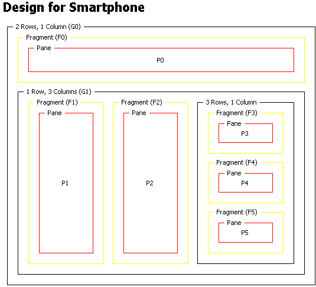

Compared to PCs, PDAs and phones have limited display capability, so you often need to modify the content sent to them. Text can be very difficult to read if users have to scroll it both horizontally and vertically, for example.
MCS allows you to split your content into a series of pages with links to provide navigation between them. Each individual page generated from a larger layout is called a fragment.
The first step in creating a fragment set is to create a root fragment for the whole canvas. This fragment will contain the links to the other fragments. The other fragments each contain a link back to the root fragment. So users can select and traverse the links just as they would for any other web link.
The figure shows a canvas layout divided into six fragments. The root fragment is a pane in the first row of a two-row format. The root fragment contains the links to the other fragments that allow them to be accessed. The second row of this format consists of a three-column format, with panes for fragments 1 and 2. The third column consists of a three-row format for fragments 3-5.
When MCS delivers this layout to a small device, it will be displayed as the set of pages, starting with the content in the root fragment and its links.
Fragment layout

MCS binds the fragment in the layout to the XDIME markup using the name attribute of the fragment element.
<canvas layoutName="/layout1.mlyt">
<layout>
<fragment name="F1" linkText="Your basket" backLinkText="Continue
shopping">
</fragment>
</layout>
...
</canvas>
Related topics
Canvas layouts and panes
Dissecting panes
Replicas